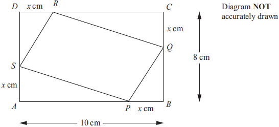
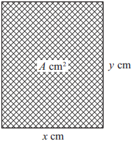
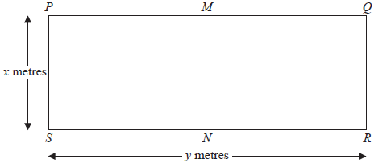
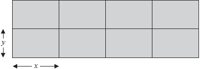
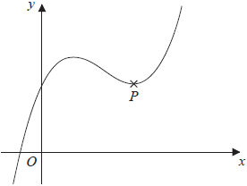
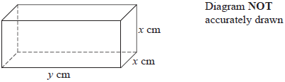

1

ABCD is a rectangle.
AB = 10 cm.
BC = 8 cm.
P, Q, R and S are points on the sides of the rectangle.
BP = CQ = DR = AS = \( x \) cm.
(a)
Show that the area, \( A \) cm2, of the quadrilateral PQRS is given by the formula
\[ A = 2x^2 - 18x + 80 \]
(3)
(b)
For \( A = 2x^2 - 18x + 80 \)
(i)
find \(\displaystyle {\mathrm{d}A \over \mathrm{d}x} \),
(2)
(ii)
find the value of \( x \) for which \( A \) is a minimum.
(2)
(iii)
Explain how you know that \( A \) is a minimum for this value of \( x \).
(1)
2

The diagram shows a rectangular photo frame of area \(A\) cm2.
The width of the photo frame is \(x\) cm.
The height of the photo frame is \(y\) cm.
The perimeter of the photo frame is 72 cm.
(a)
Show that \(A = 36x – x^2\)
(3)
(b)
Find \(\displaystyle \frac{\mathrm{d}A}{\mathrm{d}x}\)
(2)
(c)
Find the maximum value of \(A\).
(3)
3
For the curve with equation \( y = x^3 − 3x − 1 \)
(i)
Find \(\displaystyle \frac{\mathrm{d}y}{\mathrm{d}x}\)
(2)
(ii)
find the gradient of the curve at the point where \( x = 4 \)
(2)
4
(a)
Differentiate with respect to \( x \)
(ii)
\(\displaystyle \frac{2}{x} \)
(2)
(b)
The curve with equation \(\displaystyle y = 8x^2 + \frac{2}{x}\) has one turning point.
Find the coordinates of this turning point.
Show your working clearly.
(4)
5
For the curve with equation \( y = x^3 − 6x^2 + 20 \)
(i)
Find \(\displaystyle \frac{\mathrm{d}y}{\mathrm{d}x}\)
(2)
(ii)
find the gradient of the curve at \( x = -3 \)
(2)
6
A particle is moving in a straight line which passes through a fixed point \(O\).
The displacement, \(s\) metres, of the particle from \(O\) at time \(t\) seconds is given by
\[s = 10 + 9t^2 – t^3\]
(a)
Find an expression for the velocity, \(v\) m/s, of the particle at time \(t\) seconds.
(2)
(b)
Find the time at which the acceleration of the particle is zero.
(2)
7
A farmer has 120 metres of fencing.
He is going to make a rectangular enclosure PQRS with the fencing.
He is also going to divide the enclosure into two equal parts by fencing along MN.

The width of the enclosure is \(x\) metres.
The length of the enclosure is \(y\) metres.
(a)
(i)
Show that \( y = 60 - 1.5x \)
(2)
The area of the enclosure PQRS is \(A\) m2
(ii)
Show that \( A = 60x - 1.5x^2 \)
(1)
(b)
Find \(\displaystyle \frac{\mathrm{d}A}{\mathrm{d}x}\)
(2)
(c)
Find the maximum value of \(A\).
(3)
8
A particle moves along a straight line.
The fixed point \(O\) lies on this line.
The displacement of the particle from \(O\) at time \(t\) seconds is \(s\) metres, where
\[s = t^3 - 6t + 3\]
(a)
Find an expression for the velocity, \(v\) m/s, of the particle at time \(t\) seconds.
(2)
(b)
Find the acceleration of the particle at time 5 seconds.
(2)
9
For the curve with equation \( y = 4x^3 − 2x + 5 \)
(i)
Find \(\displaystyle \frac{\mathrm{d}y}{\mathrm{d}x}\)
(2)
(ii)
find the coordinates of the two points on the curve where the gradient of the curve is 1
(4)
10
A farmer has 180 metres of fencing.
With the 180 metres of fencing, he makes an enclosure divided into eight equal, rectangular pens.
The fencing is used for the perimeter of each pen.

The length of each pen is \(x\) metres and the width of each pen is \(y\) metres.
(a)
(i)
Show that \(y = 18 – 1.2x\)
(1)
The total area of the enclosure is \(A\) m2.
(ii)
Show that \(A = 144x – 9.6x^2\)
(2)
(b)
Find \(\displaystyle \frac{\mathrm{d}A}{\mathrm{d}x}\)
(2)
(c)
Find the maximum value of \(A\).
(3)
11
(a)
\(\displaystyle y = 2x^3 + 3x^2 + 2\)
Find \(\displaystyle \frac{\mathrm{d}y}{\mathrm{d}x}\)
(2)
(b)
The point P lies on the curve with equation \(y = 2x^3 + 3x^2 + 2\)
The gradient of the curve at P is \(\displaystyle -\frac{3}{2}\)
Find the coordinates of \(P\).
(5)
12
\(y = x^3 – 4x^2 + 4x + 3\)
(a)
Find \(\displaystyle \frac{\mathrm{d}y}{\mathrm{d}x}\)
(2)

The diagram shows a sketch of the curve with equation \(y = x^3 – 4x^2 + 4x + 3\)
The point \(P\) is a turning point on the curve.
(b)
Work out the coordinates of \(P\).
Show clear algebraic working.
(4)
(c)
Write down the range of values of \(x\) for which the curve has a negative gradient.
(2)
13

The diagram shows a cuboid of volume \(V\) cm3
The length of the cuboid is \(y\) cm
The width and height of the cuboid are both \(x\) cm
The total length of all the edges of the cuboid is 112 cm
(a)
Show that \(V = 28x^2 – 2x^3\)
(3)
(b)
Find \(\displaystyle \frac{\mathrm{d}V}{\mathrm{d}x}\)
(2)
(c)
Find the maximum value of \(V\)
Give your answer correct to 3 significant figures.
(3)